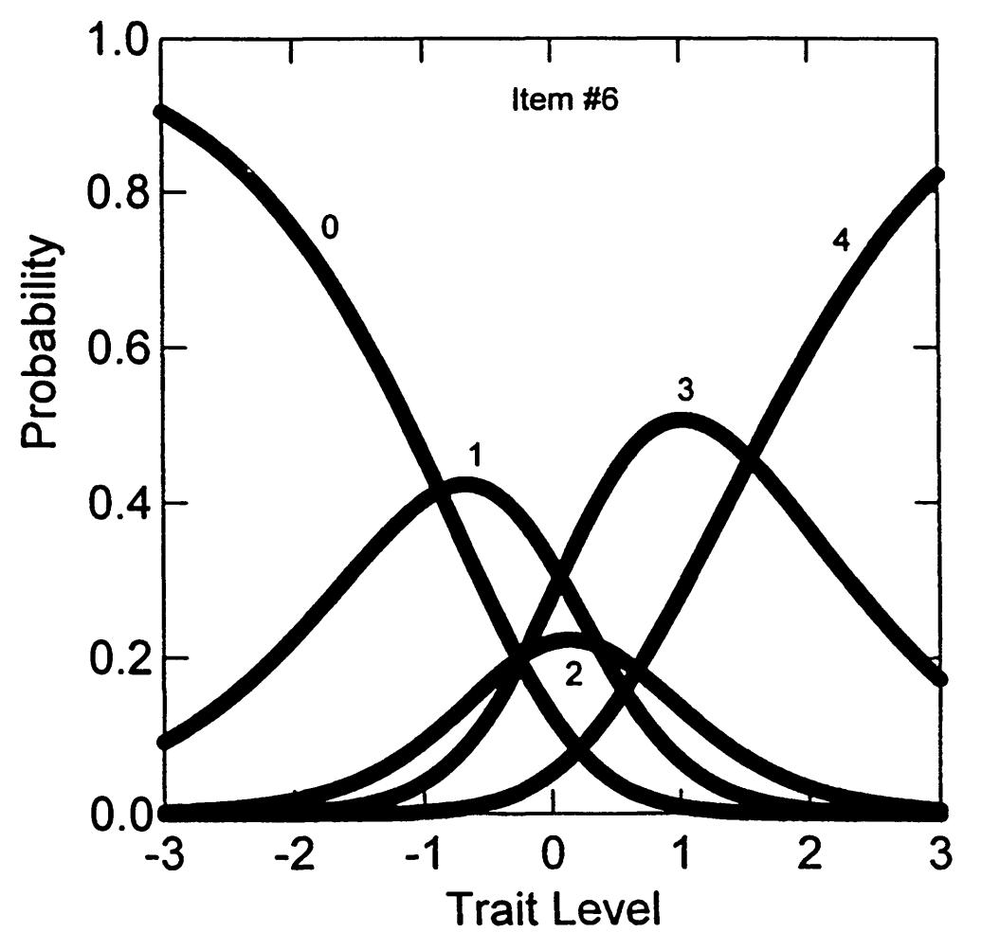
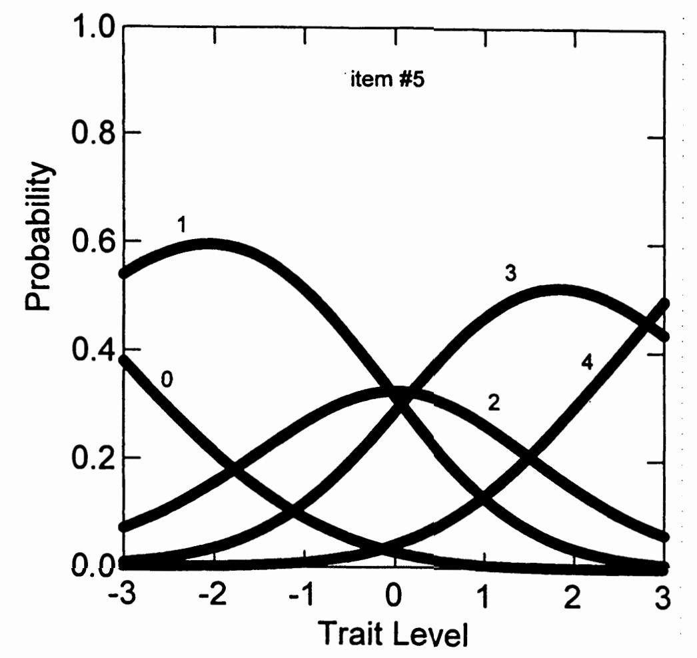
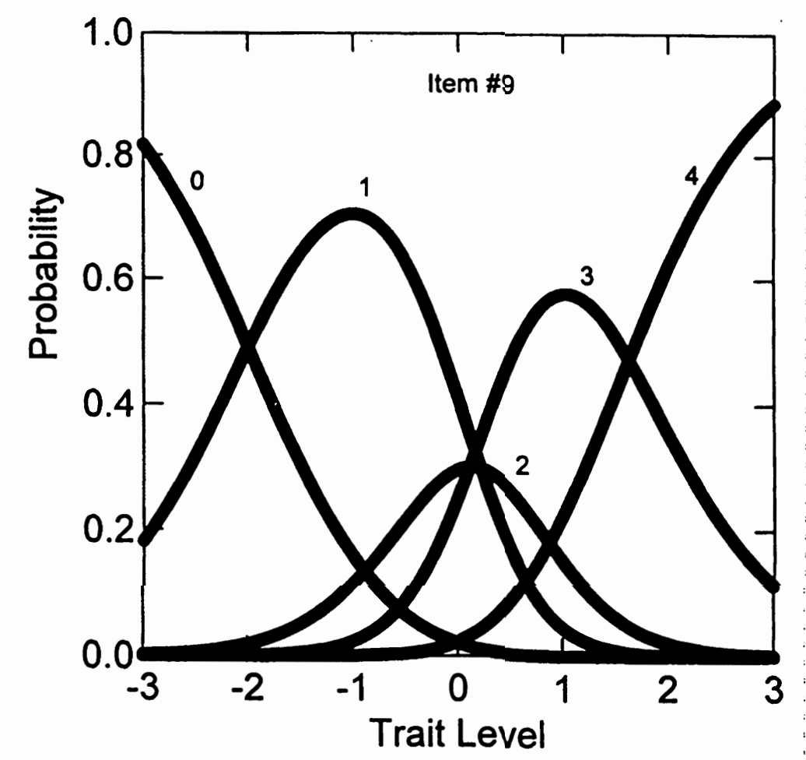

9. 广义部分计分模型（G-PCM）¶
9.1 开发背景¶
开发者： Muraki (1992; 1993)
核心改进：
- 是PCM的泛化
- 允许量表内的项目在斜率参数上有所不同
- 解决了PCM所有项目斜率必须相等的限制
估计程序： PARSCALE (Muraki, 1993)
9.2 G-PCM的表达¶
公式5.8： 在PCM基础上加入斜率参数
其中：\(\sum_{j=0}^{0}\alpha_i(\theta - \delta_{ij}) = 0\)
9.3 参数解释¶
类别交叉点参数 \(\delta_{ij}\)
- 解释与PCM相同
- 作为两个相邻类别反应曲线的交叉点
- 是一个类别反应变得比前一个反应相对更可能的点
斜率参数 \(\alpha_i\) 的特殊解释
- 注意： 与二分IRT模型中的解释方式不同！
- 在多项模型中，项目区分度取决于斜率参数与类别交叉点分布范围的组合
9.4 斜率参数在G-PCM中的作用¶
Muraki (1992, p. 162)的描述： 斜率参数"表示当θ水平变化时，类别反应在项目间变化的程度"
具体影响：
- \(\alpha_i < 1.0\) 时：相对于PCM，CRCs变得平坦
- \(\alpha_i > 1.0\) 时：CRCs相对于PCM变得更加尖峰
9.5 分析设置说明¶
重要注意
在PARSCALE分析中，12个NEO-FFI神经质项目各自形成自己的"块"（详见第13章）
结果：
- 为每个项目估计了一组单独的类别交叉点参数
- 这与之前PCM的设置不同
9.6 G-PCM在NEO-FFI数据上的参数估计¶
9.6.1 表5.6：G-PCM估计的项目参数¶
| 项目 | α (斜率) | δ1 | δ2 | δ3 | δ4 | χ² | DF | p 值 |
|---|---|---|---|---|---|---|---|---|
| 1 | 0.261 (.03) | -2.937 (.87) | 0.121 (.74) | -3.857 (.63) | 2.328 (.54) | 36.29 | 13 | 0.001 |
| 2 | 0.877 (.07) | -2.130 (.22) | 0.070 (.16) | 0.755 (.18) | 2.197 (.28) | 8.71 | 13 | 0.795 |
| 3 | 0.797 (.06) | -2.295 (.30) | 0.197 (.24) | -1.462 (.22) | 1.399 (.19) | 9.29 | 14 | 0.813 |
| 4 | 0.735 (.06) | -2.923 (.34) | 0.028 (.22) | -0.703 (.20) | 1.919 (.23) | 3.02 | 13 | 0.998 |
| 5 | 0.683 (.05) | -3.513 (.38) | -0.041 (.20) | 0.182 (.21) | 2.808 (.33) | 9.29 | 12 | 0.678 |
| 6 | 1.073 (.09) | -0.873 (.15) | 0.358 (.16) | -0.226 (.16) | 1.547 (.18) | 8.71 | 11 | 0.650 |
| 7 | 0.583 (.05) | -4.493 (.55) | -0.004 (.26) | -0.732 (.24) | 2.792 (.33) | 16.93 | 11 | 0.109 |
| 8 | 0.345 (.03) | -4.815 (.68) | 0.012 (.42) | -0.362 (.41) | 4.256 (.60) | 11.58 | 14 | 0.640 |
| 9 | 1.499 (.11) | -1.997 (.15) | 0.210 (.10) | 0.103 (.11) | 1.627 (.14) | 4.93 | 11 | 0.934 |
| 10 | 0.631 (.05) | -3.215 (.37) | 0.195 (.24) | -0.292 (.23) | 2.299 (.30) | 15.07 | 13 | 0.302 |
| 11 | 1.059 (.09) | -1.440 (.16) | 0.551 (.15) | 0.397 (.16) | 2.039 (.23) | 22.12 | 11 | 0.023 |
| 12 | 0.565 (.05) | -2.628 (.37) | 0.534 (.30) | -1.241 (.29) | 1.720 (.28) | 9.65 | 13 | 0.723 |
总模型拟合：
- 总卡方统计量：155.64
- 总自由度：149
- 总拟合 p 值：0.338
- -2 log likelihood = 11,384.921
注：表中括号内为标准误（Standard Error）。
参数结构：
每个项目显示：
- α：斜率参数
- δ₁, δ₂, δ₃, δ₄：四个类别交叉点参数
- 卡方拟合统计量、自由度和p值
9.6.2 重要发现1：斜率参数的巨大变异¶
具体数值：
- 项目1：α = 0.261（最小）
- 项目8：α = 0.345
- 项目9：α = 1.499（最大）
- 项目6：α = 1.073
变异范围：
从0.261到1.499，差异接近6倍！这验证了我们之前的预期。
9.6.3 重要发现2：与GRM结果的一致性¶
斜率排序的一致性解释
回顾之前的GRM结果（表5.3）：
GRM中的斜率参数：
- 项目9：α = 2.09（最高）
- 项目6：α = 1.84
- 项目2：α = 1.42
- 项目1：α = 0.70
- 项目8：α = 0.65（最低）
GRM中的斜率排序（从高到低）：
项目9 > 项目6 > 项目2 > ... > 项目1 > 项目8
现在看G-PCM的结果（表5.6）：
G-PCM中的斜率参数：
- 项目9：α = 1.499（最高）
- 项目6：α = 1.073
- 项目2：α = 0.877
- 项目1：α = 0.261
- 项目8：α = 0.345（最低）
G-PCM中的斜率排序（从高到低）：
项目9 > 项目6 > 项目2 > ... > 项目8 > 项目1
关键发现：排序几乎相同！
一致性体现：
- 在GRM中斜率最高的项目（项目9），在G-PCM中也是最高
- 在GRM中斜率最低的项目（项目8），在G-PCM中也是最低
- 中间项目的相对排序也基本一致
为什么数值不同但排序相同？
1. 不同的建模框架：
- GRM是"间接"模型（两步过程）
- G-PCM是"直接"模型（一步过程）
- 表达方式不同，所以参数数值不同
2. 但测量的是同一个概念：
- 两个模型都在测量"项目区分度"
- 区分度高的项目在两个模型中都表现为高斜率
- 区分度低的项目在两个模型中都表现为低斜率
实际意义：
- 模型验证：一致的排序证明两个模型都在合理地识别项目特性
- 实用价值：无论用哪个模型，我们都会得出相同结论
9.6.4 图形例子：不同斜率的影响¶
选择三个典型项目进行说明：

图5.7显示了项目6的类别反应曲线，斜率估计≈1.0，可作为与其他曲线比较的基线。

图5.8显示了项目5的类别反应曲线，具有相对较低的斜率值。曲线很好地捕捉该项目大多数反应集中在类别1和3的事实，展示了低斜率如何产生更平坦的曲线。

图5.9显示了项目9的类别反应曲线，具有大斜率值。相对于项目5，这些曲线更加尖峰，展示了高斜率如何产生更陡峭、更有区分度的曲线。
9.6.5 斜率参数的视觉效果总结¶
低斜率(如项目5)：
- 曲线平坦
- 在较宽的θ范围内提供信息
- 区分度相对较低
高斜率(如项目9)：
- 曲线尖峰
- 在较窄的θ范围内提供强烈信息
- 区分度相对较高
中等斜率(如项目6)：
- 介于两者之间的平衡
9.7 G-PCM的拟合统计量评估¶
9.7.1 表5.6：拟合统计量结果¶
| 项目 | α (斜率) | δ1 | δ2 | δ3 | δ4 | χ² | DF | p 值 |
|---|---|---|---|---|---|---|---|---|
| 1 | 0.261 (.03) | -2.937 (.87) | 0.121 (.74) | -3.857 (.63) | 2.328 (.54) | 36.29 | 13 | 0.001 |
| 2 | 0.877 (.07) | -2.130 (.22) | 0.070 (.16) | 0.755 (.18) | 2.197 (.28) | 8.71 | 13 | 0.795 |
| 3 | 0.797 (.06) | -2.295 (.30) | 0.197 (.24) | -1.462 (.22) | 1.399 (.19) | 9.29 | 14 | 0.813 |
| 4 | 0.735 (.06) | -2.923 (.34) | 0.028 (.22) | -0.703 (.20) | 1.919 (.23) | 3.02 | 13 | 0.998 |
| 5 | 0.683 (.05) | -3.513 (.38) | -0.041 (.20) | 0.182 (.21) | 2.808 (.33) | 9.29 | 12 | 0.678 |
| 6 | 1.073 (.09) | -0.873 (.15) | 0.358 (.16) | -0.226 (.16) | 1.547 (.18) | 8.71 | 11 | 0.650 |
| 7 | 0.583 (.05) | -4.493 (.55) | -0.004 (.26) | -0.732 (.24) | 2.792 (.33) | 16.93 | 11 | 0.109 |
| 8 | 0.345 (.03) | -4.815 (.68) | 0.012 (.42) | -0.362 (.41) | 4.256 (.60) | 11.58 | 14 | 0.640 |
| 9 | 1.499 (.11) | -1.997 (.15) | 0.210 (.10) | 0.103 (.11) | 1.627 (.14) | 4.93 | 11 | 0.934 |
| 10 | 0.631 (.05) | -3.215 (.37) | 0.195 (.24) | -0.292 (.23) | 2.299 (.30) | 15.07 | 13 | 0.302 |
| 11 | 1.059 (.09) | -1.440 (.16) | 0.551 (.15) | 0.397 (.16) | 2.039 (.23) | 22.12 | 11 | 0.023 |
| 12 | 0.565 (.05) | -2.628 (.37) | 0.534 (.30) | -1.241 (.29) | 1.720 (.28) | 9.65 | 13 | 0.723 |
总模型拟合：
- 总卡方统计量：155.64
- 总自由度：149
- 总拟合 p 值：0.338
- -2 log likelihood = 11,384.921
注：表中括号内为标准误（Standard Error）。
右侧列显示： PARSCALE输出的卡方拟合统计量
结果汇总：
- 12个项目中只有2个未能被估计的G-PCM项目参数很好地表示
- 这与PCM的4个不拟合项目相比，有明显改善
9.7.2 整体拟合评估¶
总体拟合统计量：
- 总卡方值：155.64（149自由度）
- p = 0.33，表明整体拟合是充分的
- 这是一个非显著的结果，说明模型拟合良好
对数似然值：
- -2倍对数似然值 = 11,384.921
9.7.3 模型比较：PCM vs G-PCM¶
统计比较：
- PCM的-2 log likelihood = 11,553.011
- G-PCM的-2 log likelihood = 11,384.921
- 卡方变化 = 11,553.011 - 11,384.921 = 168.09
- 自由度变化 = 12（每个项目增加1个斜率参数）
显著性检验：
- 卡方变化 = 168.08（12自由度）
- p < 0.001
- 这意味着G-PCM相对于PCM是显著改进
9.7.4 结果解释¶
G-PCM的优势得到验证：
- 更好的项目水平拟合：从4个不拟合项目降到2个
- 更好的整体拟合：总体p值从<0.001提升到0.33
- 统计显著的改进：似然比检验高度显著
为什么G-PCM表现更好？
- 允许项目有不同的斜率参数
- 更好地反映了实际数据中项目区分度的差异
- 没有PCM"所有项目斜率相等"的不现实约束
9.7.5 实际启示¶
模型选择建议
- 当数据显示项目区分度差异较大时，应选择G-PCM而非PCM
- 额外的参数（斜率）是值得的，因为显著改善了拟合
测验开发启示
- NEO-FFI的不同项目确实具有不同的区分度
- 这种差异是真实存在的，不应被忽略